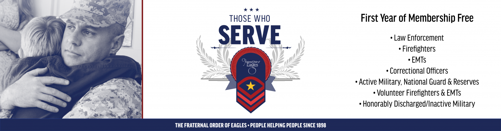

Those Who Serve

Those Who Serve Membership Program
The Fraternal Order of Eagles stands behind the men and women who serve and protect our communities. To show our gratitude, the Those Who Serve program offers the first year of membership free to active and retired law enforcement officers, firefighters, emergency medical technicians, correctional officers, active military including National Guard and Reserves, volunteer firefighters and EMTs, and honorably discharged, retired, or inactive military members.
Membership Benefits
- Protection for your family through the F.O.E. Memorial Foundation.
- Access to discounts on hotels, rental cars, insurance, vacations, cruises, prescription medications, and more through F.O.E. affinity partners.
- Admission to more than 1,500 locations across the United States and Canada.
- Opportunities to participate in Eagles programs and events throughout the year, including the annual International Convention.
- Home delivery of Soar, the full-color biannual publication sharing updates and information on Eagles activities.
Charity Foundation
Our commitment to Those Who Serve comes from a shared interest in saving lives. The Eagles Charity Foundation provides grants to institutions specializing in research and patient care for causes including diabetes, kidney disease, heart disease, pediatric ailments, spinal cord injuries, and more.
Every dollar donated to the Charity Foundation goes to the individuals and organizations who need it most.
Memorial Foundation
The Memorial Foundation was created in 1947 to assist families of fallen members serving in World War II. Today, it provides care for the children of Eagles, including legally adopted children and stepchildren, who lose their lives serving their country or while on the job.
- Educational grants
- Medical benefits
- Dental and orthodontic benefits
- Optical care
- Hospitalization
- Psychiatric care